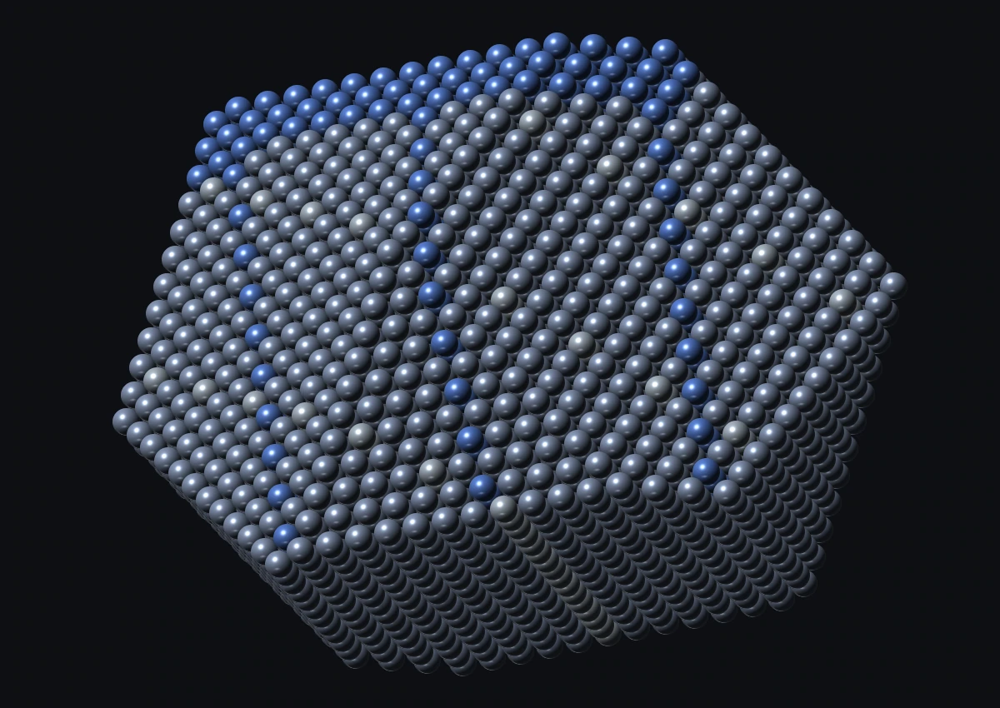
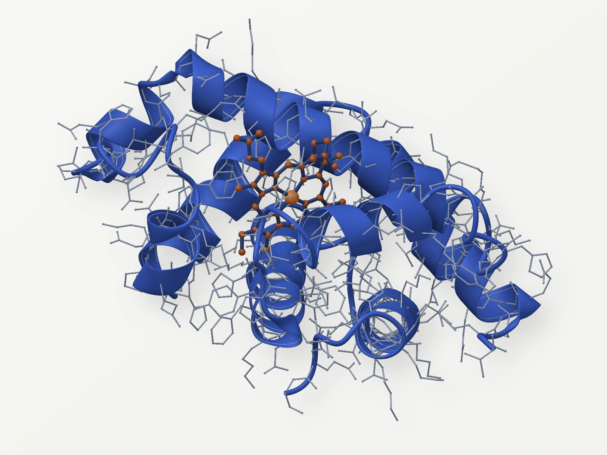
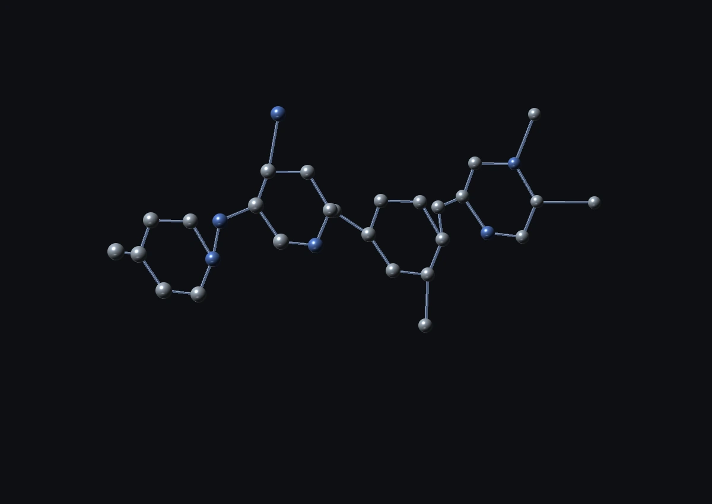

在计算机上模拟上亿个原子的运动
深势联合创始团队成员与合作者采用深度势能方法，在 Summit 超级计算机上完成上亿个原子的分子动力学模拟，同时保持第一性原理计算的精度。这项研究获得 2020 年戈登·贝尔奖。
阅读分子动力学论文
深势理念 · AI 科学家
深势科技以科学智能体为核心，推进 AI 科学家的研发与应用。我们希望 AI 能够与科学家共同探索尚未解决的问题，基于已有知识提出假设，并通过计算和实验加以检验。
“读、算、做、智”是深势研发 AI 科学家的技术路径。研究者提出问题、设定目标，科学智能体据此规划任务、调用专业工具，组织文献调研、科学计算与实验验证。研究者审视关键证据，判断结果的科学意义，调整下一步研究方案。
围绕研究目标，规划任务、调用工具，组织调研、计算与验证。
玻尔科学空间已服务全球数百万用户。深势已为近 200 家企业提供产品与服务。
认识深势产品与能力
深势以科学智能体为核心，建设开放的 AI 原生科学基础设施，让更多研究团队用得上专业的计算与实验方法，也让真实的科学问题和实验证据指引 AI 模型的改进。

深势将长期积累的科学建模与计算方法做成专业软件。玻尔科学空间是深势面向研究者提供科学服务的统一入口。研究者可以从自己的课题出发，与科学智能体协作，调用不同领域的模型和工具。
深势为科学模型和智能体建设科学原生的训推一体基础设施，将科学数据、专业工具和可验证的科研任务引入模型的开发与评测。一个模型能否复现一项计算，在什么条件下能作出可靠预测，开发团队可以依据科学证据判断，也由此知道下一步该改进什么。
已有数据回答不了的问题，需要新的实验。深势正在建设可编程的自主实验室，让研究团队能把实验方案转化为仪器可重复执行的流程，记录每次测量的条件和结果。预测与实测之间的差异，既能帮助科学家修正假设、决定下一轮做什么实验，也为改进模型提供了依据。
不同研究领域有各自的研究对象和验证标准。深势与科研机构和企业研发团队合作，将科学模型、专业工具和实验方法用于具体的研发任务。
为教育机构提供知识调研、科学计算和数据分析工具，支持研究者复现已有结果、检验新的科学假设。
咨询基础科研解决方案面向药物研发、生物技术与合成生物学，结合结构建模和实验验证，支持靶点研究、分子设计与候选筛选。
咨询生命科学解决方案用多尺度模拟研究材料结构与性能的关系，结合计算设计和实验测试，开展电池材料、化学品和日化配方研发。
咨询物质科学解决方案为模型研发团队提供科学数据、运行环境和科研任务评测。通过核验模型提交的计算结果，定位能力短板，检验不同版本的改进效果。
咨询人工智能解决方案深势与企业研发团队共同梳理核心研发流程，将科学智能体与企业已有的数据、知识和工具结合，建设适合自身业务的智能研发系统。
根据客户的研发目标，深势按需开展计算设计、分子合成或材料制备，以及实验测试。研发团队依据验证结果筛选和优化候选方案。
深势从分子动力学模拟起步，将物理建模、科学计算与机器学习相结合，研究原子和分子的结构、性质与相互作用，并将原创方法用于科研软件和产业研发。
深势联合创始团队成员与合作者采用深度势能方法，在 Summit 超级计算机上完成上亿个原子的分子动力学模拟，同时保持第一性原理计算的精度。这项研究获得 2020 年戈登·贝尔奖。
阅读分子动力学论文
Uni-Mol 从小分子与蛋白质结合口袋的三维结构中学习，预测两者结合时的空间姿态。研究团队用已知复合物结构检验预测结果，并开放了模型与代码。
查看 Uni-Mol 研究与代码
在针对 Kimi K3.1 Pro 等模型的科研实测中，深势以 100 道科研任务，在统一时限下比较八组模型与执行框架的表现。研究团队逐题核验提交的数据与计算结果，识别任务完成情况，定位出错的环节。
查看科研评测实例在 DeepModeling 开源社区，研究者可以获取科学建模与模拟工具，在自己的研究体系中检验已有方法，也可以贡献代码和算例。
进入开源社区围绕具体科学问题，科学挑战邀请研究者、开发者和领域专家共同探索解法，通过公开任务和评测规则比较不同方法的表现。
查看科学挑战